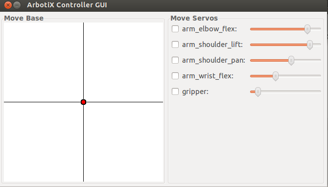

Getting Started with Turtlebot Arm PhantomX Pincher with ROS¶
This tutorial is the step to learn about how to integrate the Turtlebot robot with the Arm PhantomX Pincher.
The objective of this tutorial is to learn how to set up and work with Turtlebot Arm PhantomX Pincher with ROS using the arbotix ROS package.
Note
In this tutorial you will learn how to:
Download the
arbotixpackageTest and Develop the Arm PhantomX Pincher robot
This tutorial was developed for ROS Hydro version. A complete package of turtlebot arm can be found at turtlebot_arm github .
Download the Arbotix Package¶
First, make sure to install the arbotix package as follows:
sudo apt-get install ros-hydro-arbotix
Then, you can check that you arm is effectively connected to your robot (or computer machine). Connect the PhantomX Pincher arm through USB port to your robot laptop and plug power cable to socket. make sure that you have read, write and execute access on the USP port using this command
sudo chmod 777 /dev/ttyUSB0
Assuming that your arm is connected on port ttyUSB0 to the robot laptop. Then, execute the following command:
arbotix_terminal
You should see the following:
ArbotiX Terminal --- Version 0.1
Copyright 2011 Vanadium Labs LLC
>>
You can check that your servos are all active using the ls command
ArbotiX Terminal --- Version 0.1
Copyright 2011 Vanadium Labs LLC
>> ls
1 2 3 4 5 .... .... .... ....
.... .... .... .... .... .... .... .... ....
This means that all the five servos are active and recognized.
Test and Develop the Arm PhantomX Pincher robot¶
Now, you want to move the robot arm. This can be done through the arbotix_gui interface, but some prior work is needed beforehand.
First, you need to describe the turtlebot arm in a yaml description file. Here is a working description of the PhatomX Pincher arm, assuming that the arm is connected through port ttyUSB0
port: /dev/ttyUSB0
read_rate: 15
write_rate: 25
joints: {
arm_shoulder_pan_joint: {id: 1, neutral: 205, max_angle: 180, min_angle: -60, max_speed: 90},
arm_shoulder_lift_joint: {id: 2, max_angle: 150, min_angle: -150, max_speed: 90},
arm_elbow_flex_joint: {id: 3, max_angle: 150, min_angle: -150, max_speed: 90},
arm_wrist_flex_joint: {id: 4, max_angle: 100, min_angle: -100, max_speed: 90},
gripper_joint: {id: 5, max_speed: 90},
}
controllers: {
arm_controller: {type: follow_controller, joints: [arm_shoulder_pan_joint, arm_shoulder_lift_joint, arm_elbow_flex_joint,
arm_wrist_flex_joint], action_name: arm_controller/follow_joint_trajectory, onboard: False }
}
As it can be observed, five joints are defined, each joint related to one servo. For example, servo 1 is defined as arm_shoulder_pan_joint. Then, controllers are defined. All joints are of follow_controller type. Consult arbotix wiki page for more details about controllers types and other information.
You need to copy and paste the code above in a file with .yaml extension and put in a certain ROS package. let us assume that the file is called turtlebot_arm.yaml and is located in the turtlebot_arm_bringup package.
Now, in your package (e.g. turtlebot_arm_bringup) define the following launch file to run the arbotix_driver for the PhantomX Pincher arm and call it turtlebot_arm_bringup.launch
<launch>
<node name="arbotix" pkg="arbotix_python" type="arbotix_driver" output="screen">
<rosparam file="$(find turtlebot_arm_bringup)/config/turtlebot_arm.yaml" command="load" />
</node>
</launch>
This simple launch file will start the node arbotix_driver located in the arbotix_python and will take as argument the yaml description file of the PhantomX Pincher arm named turtlebot_arm.yaml.
You can now start up the driver as follows:
roslaunch turtlebot_arm_bringup turtlebot_arm_bringup.launch
You should see the following output:
... logging to /home/akoubaa/.ros/log/60196d6e-27a7-11e4-98e5-080027b791fe/roslaunch-coins-3216.log
Checking log directory for disk usage. This may take awhile.
Press Ctrl-C to interrupt
Done checking log file disk usage. Usage is <1GB.
started roslaunch server http://coins:40447/
SUMMARY
========
PARAMETERS
* /arbotix/controllers/arm_controller/action_name
* /arbotix/controllers/arm_controller/joints
* /arbotix/controllers/arm_controller/onboard
* /arbotix/controllers/arm_controller/type
* /arbotix/joints/arm_elbow_flex_joint/id
* /arbotix/joints/arm_elbow_flex_joint/max_angle
* /arbotix/joints/arm_elbow_flex_joint/max_speed
* /arbotix/joints/arm_elbow_flex_joint/min_angle
* /arbotix/joints/arm_shoulder_lift_joint/id
* /arbotix/joints/arm_shoulder_lift_joint/max_angle
* /arbotix/joints/arm_shoulder_lift_joint/max_speed
* /arbotix/joints/arm_shoulder_lift_joint/min_angle
* /arbotix/joints/arm_shoulder_pan_joint/id
* /arbotix/joints/arm_shoulder_pan_joint/max_angle
* /arbotix/joints/arm_shoulder_pan_joint/max_speed
* /arbotix/joints/arm_shoulder_pan_joint/min_angle
* /arbotix/joints/arm_shoulder_pan_joint/neutral
* /arbotix/joints/arm_wrist_flex_joint/id
* /arbotix/joints/arm_wrist_flex_joint/max_angle
* /arbotix/joints/arm_wrist_flex_joint/max_speed
* /arbotix/joints/arm_wrist_flex_joint/min_angle
* /arbotix/joints/gripper_joint/id
* /arbotix/joints/gripper_joint/max_speed
* /arbotix/port
* /arbotix/read_rate
* /arbotix/write_rate
* /rosdistro
* /rosversion
NODES
/
arbotix (arbotix_python/arbotix_driver)
ROS_MASTER_URI=http://localhost:11311
core service [/rosout] found
process[arbotix-1]: started with pid [3234]
[INFO] [WallTime: 1408457288.608035] Started ArbotiX connection on port /dev/ttyUSB0.
[INFO] [WallTime: 1408457288.713417] Started FollowController (arm_controller). Joints: ['arm_shoulder_pan_joint', 'arm_shoulder_lift_joint', 'arm_elbow_flex_joint', 'arm_wrist_flex_joint'] on C1
[INFO] [WallTime: 1408457288.717421] ArbotiX connected.
This means that your arm is not successfully connected and ready to receive motion command. The easiest way to control the servos is using the arbotix_gui command:
arbotix_gui
Then, you should see the following interface of the Arbotix Simulator
Simply check any joint and enjoy moving it.